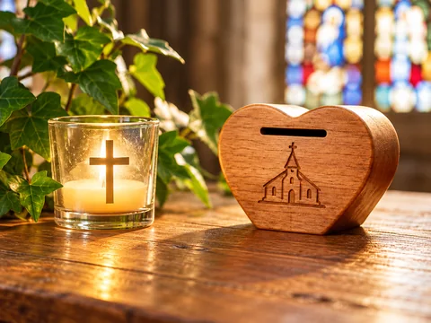

Care for our churches
Help us care for the places where people gather for worship, prayer and community.
A life of generosity
Your generosity helps us worship, serve our community and care for our churches.
Thank you for considering a gift. Every kind of support is received with gratitude.
Ways to give
The life of our parish
Your generosity supports the worship, ministry and practical life of the parish. It helps care for our churches and churchyards and enables us to serve our local community.
Help us care for the places where people gather for worship, prayer and community.
Support the ongoing worship and ministry of our parish.
Help us serve and support people in our local community.
Support the care and maintenance of our churchyards.
Ways to support the parish
There are several ways to support the worship, ministry and care of our parish. Choose the way that suits you.
Ongoing support
Regular giving helps the parish plan confidently for worship, ministry and the care of our churches.
The Parish Giving Scheme (PGS) provides a simple way to make regular gifts by Direct Debit.
Ask about the Parish Giving SchemeFrom your bank
You can make a one-off bank transfer or arrange a regular Standing Order through your bank.
A Standing Order can be arranged directly through your bank.
During your visit
A Payaz contactless giving terminal is available in St Michael & All Angels for card and contactless donations.
When you join us
Cash and cheque donations may be left in the small wall safe by the Payaz terminal in church.
Please make cheques payable to Mickleham Church PCC. For help with sending a cheque, contact the parish.
Ask about giving by chequeAn optional way to help
If you’re an eligible UK taxpayer, Gift Aid can increase the value of your donation at no extra cost to you.
Free Will Offering / Gift Aid envelopes are available in church.
Ask about Gift Aid or a declarationYour peace of mind
This website does not currently take online donations or process payments.
You can use the parish giving options above.
A lasting gift
A gift in your will can help support the worship, ministry and care of St Michael & All Angels for future generations. If you are considering remembering the church in your will, please contact the parish for more information.
Ask about legacy givingThe Parochial Church Council of the Ecclesiastical Parish of Mickleham
Registered Charity No. 1128482
With gratitude
Whether you give regularly, make a one-off gift, or support us in other ways, thank you for being part of the life of our church.